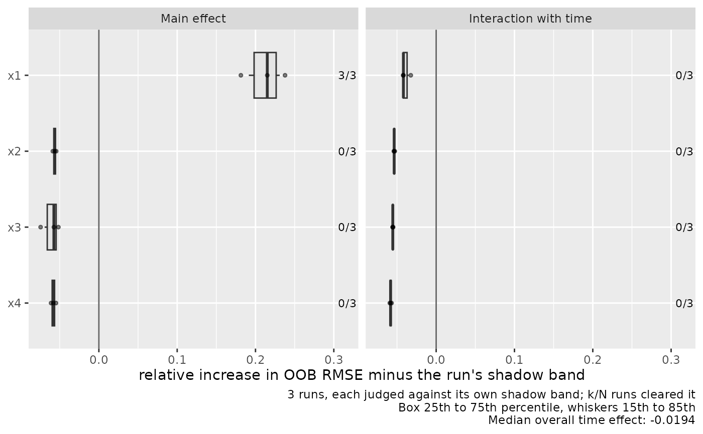

Pool several vimp.boostmtree runs and report, for
each covariate and panel, the share of runs in which it cleared that run's
shadow band.
Usage
# S3 method for class 'list'
gg_boost_vimp(object, components = c("main", "interaction"), ...)Arguments
- object
A list of
vimp.boostmtreeobjects, each from a fit with shadow covariates.- components
Character vector naming the components to extract, any of
"main"and"interaction". Defaults to both.- ...
Not used; present for S3 consistency.
Value
A gg_boost_vimp_pool data.frame with one row per covariate,
component and response (shadows excluded) and columns:
- variable
Factor covariate name.
- component
Factor,
mainorinteraction.- response
Factor naming the response.
- n_runs
Integer number of runs pooled.
- n_detected
Integer number of runs in which the covariate cleared that run's shadow band.
- share
n_detected / n_runs.- median_importance
Median importance over runs.
- q15, q25, q50, q75, q85
Percentiles of the margin over the band across runs.
with attributes runs (a data.frame with one row per run and covariate:
variable, component, response, run, importance, band,
margin and detected), metric, n_runs, and time.effect (the
median overall time effect over runs, when every run records one).
Details
One importance object is one run, and a covariate close to the shadow band
can land on either side of it from one run to the next. Pass a list of runs
to see how often it clears the band. The runs can be repeated calls to
vimp.boostmtree on one fit, one call on each of
several refits, or a mix. Refitting moves a borderline verdict as much as
rerunning the importance does, so refits are the stronger check.
Every run is judged against its own band, never against a pooled one. In
each run and panel, the band is the largest importance any shadow covariate
reached, floored at zero, as in the single-run figure. The margin is a
covariate's importance minus that band, and the covariate cleared the band
in that run when its margin is above zero. The share is the fraction of
runs in which it did. No verdict is drawn from the share: it measures how
stable a single-run verdict is, not a test with a known error rate.
Every run must carry shadow covariates (see boost_shadow),
since a run without them has no band, and every run must name the same
covariates, components, responses and metric as the first, and have a
finite importance for every covariate, shadows included. Any of these
problems stops with an error naming the run. Only boostmtree runs can
be pooled.
Runs are labelled by the names of the list, or numbered when it has none.
Examples
# \donttest{
sim <- boostmtree::simLong(n = 25, n.time = 4, model = 1)$data.list
x <- boost_shadow(sim$features, sim$id, k = 2)
fit <- boostmtree::boostmtree(
x = x, tm = sim$time, id = sim$id, y = sim$y,
M = 50, cv.flag = TRUE, verbose = FALSE
)
runs <- lapply(1:3, function(i) boostmtree::vimp.boostmtree(fit))
pooled <- gg_boost_vimp(runs)
pooled[, c("variable", "component", "share")]
#> variable component share
#> 1 x1 main 1
#> 2 x2 main 0
#> 3 x3 main 0
#> 4 x4 main 0
#> 5 x1 interaction 0
#> 6 x2 interaction 0
#> 7 x3 interaction 0
#> 8 x4 interaction 0
plot(pooled)

# }